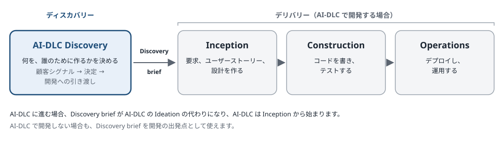
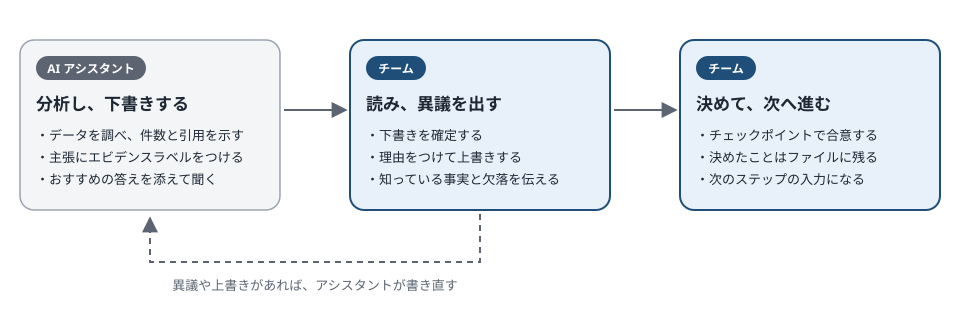
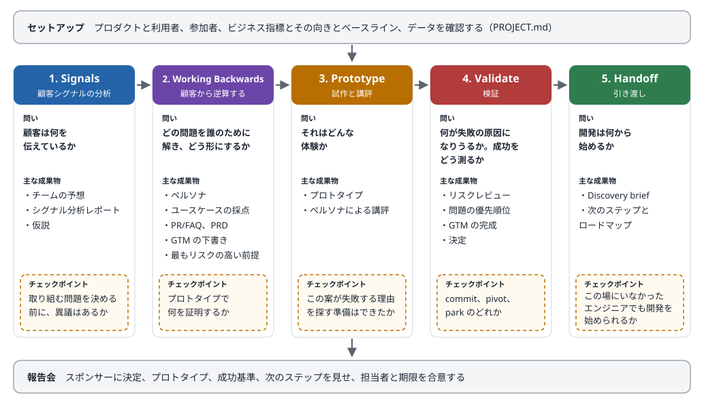
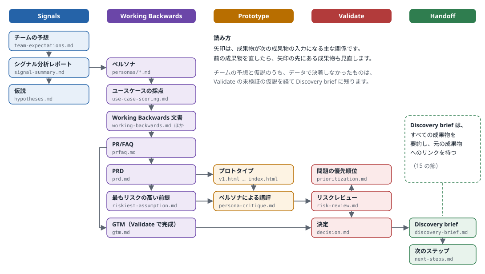
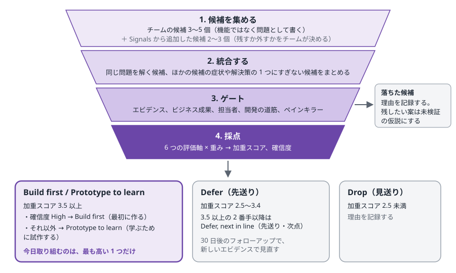
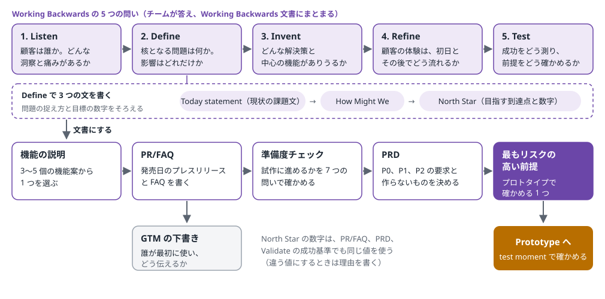
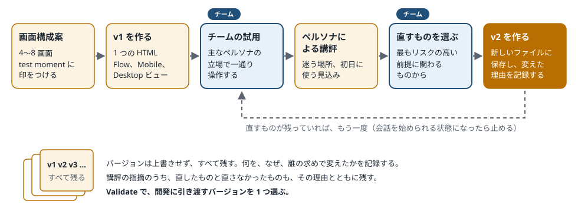
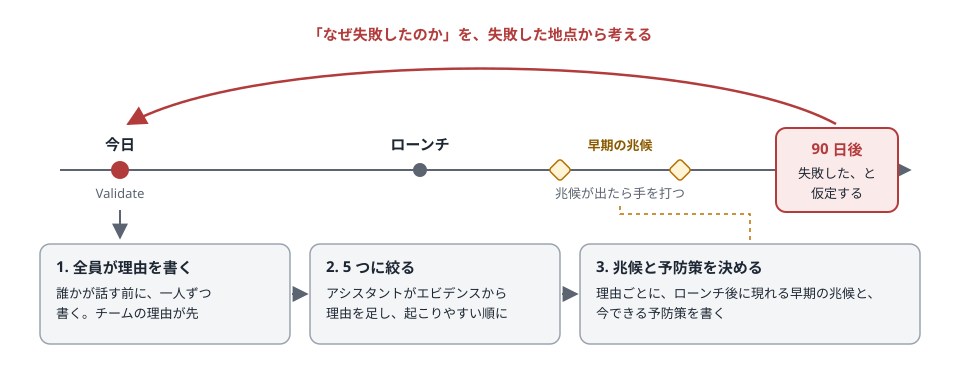
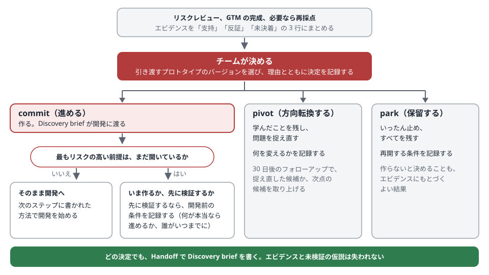
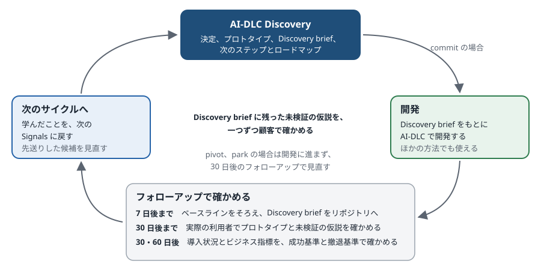

顧客の声から「最初に作るもの」を決める
プロダクトマネジメントでは、開発の仕事を 2 つに分けて考えます（Marty Cagan『INSPIRED』）。
顧客が本当に必要としているものを見つけ、何を作るべきかを決める仕事
それを作って、顧客に届ける仕事
顧客の声に裏付けられたエビデンスで、ディスカバリーを行う方法論です。チームはワークショップの形で集まり、エージェントスキルを使って AI アシスタントと進めます。
誰の、どんな問題を、なぜ解くか
アーキテクチャ、モデルの選定、データの設計、運用の準備
AI-DLC: AI 駆動開発ライフサイクル（AI-Driven Development Lifecycle）。AI-DLC Discovery の成果は、AI-DLC に引き継ぎます。


スコアも決定も、チームが確定するまでは下書き。理由をつけた上書きは、よい結果です。
| ラベル | 意味 | 例 | レビューでの扱い |
|---|---|---|---|
| Known データで裏付けあり | 件数、引用、指標など、データが示している | 「400 件中 102 件が、この問題に触れている」 | 何の何件中か。範囲を広げすぎていないか |
| Assumed 仮定 | そう考えているが、データでは示されていない | 根本原因の仮説、チームの経験にもとづく判断 | 判断に関わるなら、検証の計画があるか |
| Needs evidence 要エビデンス | 判断に関わるので、検証が必要 | 画面にあるが、誰も確認していない機能 | 担当者と期限がついているか |
レビューの的は Assumed と Needs evidence。プレスリリースだけは、この 2 つにだけラベルがつきます。
Verdict: など）と表の見出し後のステップと AI-DLC が読むため。本文は日本語。
4〜6 人が目安。多ければ 4〜5 人のポッドに分かれ、ポッドごとに 1 つのユースケースを担当。AI アシスタントへの入力は、1 人の操作担当者が行います。
| 役割 | 参加 | AI-DLC Discovery での役割 |
|---|---|---|
| プロダクトオーナー | 必須 | ビジネス指標と向きを確かめる。ユースケースと最後の決定に責任を持ち、ロードマップを受け取る |
| エンジニアリングリード | 必須 | 実現可能性のスコアを決め、開発の未知の点を挙げる。実現可能性のリスクを判定する |
| デザインの担当者 | 必要に応じて | プロトタイプの試用と講評で、使いやすさを判断する |
| データの担当者 | 必要に応じて | データの一覧と欠落を確かめ、ベースラインを用意する |
| サポート、営業の担当者 | 必要に応じて | ペルソナや顧客の声が実際の顧客に合うかを確かめる。事業性の懸念を挙げる |
| スポンサー | 最初と報告会 | 採点の重みを最初に決め、報告会で決定と次のステップを合意する |
| ファシリテーター | 全体 | 進行と時間を管理し、考えて決めるのがチーム自身であるようにする |
役割ごとに見るリスク（Cagan）: 価値と事業性はプロダクトマネージャー、使いやすさはデザイナー、実現可能性はエンジニアリングリード。
| 持ち込むもの | 内容 | 事前に考えておくこと |
|---|---|---|
| 顧客データ | 本番データ、Signal Brief（匿名化したシグナルの要約）、合成データセットのいずれか | どのチャネルのデータがあり、どれが欠けているか |
| テレメトリー（任意） | ジャーニーのステップごとの日次の集計。生のログやトレースは持ち込まない | 顧客の行動を示すデータがあるか |
| 候補のユースケース 3〜5 個 | 機能ではなく、問題として書く | どの顧客のどの問題を解くのか |
| ビジネス指標とベースライン | 動かしたい指標と現在の値。上がるとよいか、下がるとよいか | どの数字をどれだけ動かしたいのか |
組織のルールに従う。個人情報は事前に自分たちの環境で除く（tools/prepare-data）。ワークショップの中でデータを作らない。
分析の前にアシスタントが聞きます。事前に話し合うと、声の大きい人の予想にそろってしまいます。
| 項目 | 書くこと |
|---|---|
| 誰が困っているか | 顧客のセグメントや役割 |
| 問題 | その人が、どんな場面で、何に困っているか |
| エビデンス | チームがこの問題があると考える根拠 |
| ビジネス指標 | この問題を解くと動く指標 |
| 担当者 | チームの中で、開発に責任を持つ人 |
発注画面に AI のおすすめを追加する
小規模店舗のオーナーは、週に一度の発注で何をどれだけ頼めばよいか分からず、在庫切れと余剰在庫を繰り返している
| 持ち帰るもの | 内容 | 何に使うか |
|---|---|---|
| 選んだユースケースについての決定 | 開発に進めるか（commit）、方向転換するか（pivot）、保留するか（park）と、その理由 | 次に何をするかを決める |
| プロトタイプ | 操作できる画面の試作。すべてのバージョンが残る | 実際の利用者との会話を始める |
| Discovery brief | 決定、エビデンス、範囲、未検証の仮説をまとめた 1 つの文書 | 開発の出発点にする |
| 次のステップとロードマップ | 開発の始め方、フォローアップ、Now、Next、Later（今 / 次 / その後）のロードマップ | ワークショップのあとの行動を決める |
「作らない」と決めることも、よい結果。park にしても、エビデンスと学んだことは Discovery brief に残ります。

| フェーズ | 問い |
|---|---|
| Signals 顧客シグナルの分析 | 顧客は何を伝えているか |
| Working Backwards 顧客から逆算する手法 | どの問題を、誰のために、最初に解くか。それをどう形にするか |
| Prototype | それはどんな体験か |
| Validate 検証 | 何が失敗の原因になりうるか。成功をどう測るか |
| Handoff 引き渡し | 開発は何から始めるか |
discovery/
├── data/ 生のデータ（コミットしない）
└── [project]/
├── PROJECT.md
├── signals/
├── working-backwards/
├── prototype/
├── validate/
└── handoff/
PROJECT.md は起点のファイル特に、ビジネス指標と、上がるとよいか下がるとよいかを確かめる

前の成果物を直したら、矢印の先も見直します。例: ペルソナを直したら、採点、PR/FAQ、講評も。
レポートを見たあとでは、何を信じていたかを正直に思い出せない（確証バイアス、アンカリング）。役職の高い人の意見に流される HiPPO（Highest Paid Person's Opinion）を避け、口数の少ない人から聞く。
フィードバックを 1 件ずつ読み、感情、カテゴリ、緊急度、根本原因の仮説、引用を取り出して集計する。
よく出る話題が、いちばん重要とは限らない。頻度、深刻度、到達範囲の 3 つで問題の大きさを見る。
データが残した問いを「〔誰〕は〔問題〕を抱えている、なぜなら〔原因〕」の形にし、検証の方法をつける。
顧客の発言と、顧客の行動はずれることがあります。テレメトリーがあれば、Say and do 表（顧客の発言とシステムの記録を並べた表）で、テーマごとにどちらに現れたかを分けます。
| テーマが現れた場所 | 意味 | 何を疑うか |
|---|---|---|
| 両方に現れる | 顧客も言い、システムにも記録がある | 確かな問題。規模と影響を確かめる |
| フィードバックだけ | 顧客は言うが、システムには見えない | 計測していない場面がないか |
| テレメトリーだけ | システムには現れるが、顧客は言わない | 静かに離れている顧客がいないか |
| チームの予想 | データが示したこと | 判定 |
|---|---|---|
| E1. 解約の理由は、主に価格だと予想する | 解約時のコメントで価格に触れたのは 2 割ほど。多くは初期設定で止まったことに触れている | 反証 |
| E2. 法人の顧客ほど、レポート機能を求めていると予想する | 法人の問い合わせの上位にレポート機能がある | 支持 |
| E3. モバイルの利用者は、通知を嫌っていると予想する | 通知に触れたフィードバックが少なく、判断できない | 未決着 |
表の内容は説明のための架空の例です。
| 成果物 | 位置づけと作成目的 | 後で読むステップ |
|---|---|---|
| チームの予想team-expectations.md | 分析前の思い込みを記録し、データと照らし合わせる | シグナル分析レポート、仮説 |
| シグナル分析レポートsignal-summary.md | 上位の顧客の問題を、件数と引用つきで示す | ペルソナ、採点、PR/FAQ、Discovery brief |
| 仮説hypotheses.md | データが残した問いを、検証の計画にする | Validate、Discovery brief |
| 節 | 何が書いてあるか | どこを見るか |
|---|---|---|
## Summary | いちばん大事な問題とエビデンスを 2〜3 文で | 知っている顧客の姿と食い違わないか |
## Top signals | 上位 3〜7 個の問題。頻度、深刻度、到達範囲（合計 30 点）、件数、引用、根本原因の仮説 | 順位の根拠が件数だけでないか。根本原因が Assumed か |
## Say and do | テレメトリーがある場合だけ。発言と記録、どちらに現れたか | テレメトリーだけの問題を見落としていないか |
## What the team expected | 予想ごとの、支持、反証、未決着の判定 | 判定の理由がデータで説明されているか |
## Customer voices | 匿名化した顧客の発言 5 つの全文 | テーマ名ではなく、顧客の言葉として読む |
## Data gaps | カバーしていないチャネル、セグメント、期間 | 知っている欠落が載っているか |
読む順番: Summary → Top signals の上位 3 つ → What the team expected → Customer voices（全文） → Data gaps
データが残した問いが、H1、H2 … の番号で 5〜10 個並びます。仮説の文、エビデンス、確信度（HIGH、MEDIUM、LOW）、検証の方法がつきます。
| 項目 | チームの予想（E） | 仮説（H） |
|---|---|---|
| いつ書くか | 分析の前 | 分析のあと |
| 誰の言葉か | チームの言葉のまま | データから、アシスタントが下書き |
| 何がつくか | 支持、反証、未決着の判定 | 確信度と検証の方法 |
| ファイル | team-expectations.md | hypotheses.md |
データで決着しなかった予想は、E の番号つきで仮説にも載ります。

採点の前に、次のどれかに当てはまる候補を外します（理由は記録する）。
| 評価軸 | 重み | 何を見るか |
|---|---|---|
| 顧客の痛み（Pain） | 25 | 頻繁で深刻か。顧客は回避策にお金や手間をかけているか |
| ビジネス成果（Outcome） | 25 | セットアップで決めた指標が、決めた向きに動くか |
| 到達範囲（Reach） | 15 | 多くの利用者、または価値の高いセグメントに届くか |
| 戦略との適合、または脅威（Fit） | 10 | 戦略の中心か。競合や「何もしないこと」が顧客を失わせていないか |
| 実現可能性（Feas.） | 15 | データと基盤がそろっているか。既存のプロダクトの上に作れるか |
| 導入の負担（Adopt.） | 10 | いまの使い方を大きく変えずに使えるか |
スコアを見てから重みを動かすと、推したい候補のための後付けの理屈になる。変えるなら採点の前にスポンサーと決める。
3.5 以上で確信度 High は Build first、Medium か Low は Prototype to learn。2.5〜3.4 は Defer、2.5 未満は Drop。取り組むのは最も高い 1 つ。
| 成果物 | 位置づけと作成目的 | 後で読むステップ |
|---|---|---|
| ペルソナpersonas/*.md | 顧客を具体的な人として共有する | 採点、PR/FAQ、講評、Discovery brief、AI-DLC |
| ユースケースの採点use-case-scoring.md | 取り組む問題を、エビデンスと理由つきで 1 つに決める | Validate（再採点）、Discovery brief、ロードマップ |
Tagline:、Confidence:、Based on:（根拠の件数）set-aside-personas.md へ。開発と AI-DLC は読まない冒頭に採点の重みがあり、次の節が続きます。
| 節 | 何が書いてあるか | どこを見るか |
|---|---|---|
## Candidates | 候補ごとの問題、誰が困っているか、指標、担当者、出どころ | 機能ではなく問題として書かれているか |
## From Signals | Signals から加えた候補と、残すか外すかの理由 | 外した理由に納得できるか |
## Gate | 候補ごとの通過、不合格と理由 | 5 つの基準のどれかを示しているか |
## Scores | 6 つの評価軸、加重スコア、確信度、決定 | 次のスライドを参照 |
## Evidence per score | 評価軸ごとのスコアの根拠、引用、ラベル | 意見が分かれそうなスコアの根拠 |
## Overrides | チームが上書きしたスコアと理由 | 理由が書かれているか |
## Taken forward | 取り組むユースケースと決定 | チームが選んだものと一致しているか |
| 列 | 意味 | どこを見るか |
|---|---|---|
| Pain、Outcome、Reach、Fit、Feas.、Adopt. | 顧客の痛み、ビジネス成果、到達範囲、戦略との適合または脅威、実現可能性、導入の負担。それぞれ 1〜5 点 | ビジネス成果が決めた指標と向きで判断されているか。適合と実現可能性をチームが確定したか |
| Weighted | 重みをかけた合計（1.0〜5.0） | 3.5、2.5 の境目にある候補 |
| Confidence | エビデンスの強さ（High、Medium、Low） | 独立したシグナルの数に見合っているか |
| Decision | Build first / Prototype to learn / Defer / Drop | Build first か Prototype to learn が 1 つだけか |

Amazon の Working Backwards: 作る前に、発売日のプレスリリースと FAQ を書く。顧客への価値を発表できるほど明確に説明できないなら、作らない（Colin Bryar、Bill Carr『Working Backwards』）。
| 文 | 型 | 確かめること |
|---|---|---|
| Today statement 現状の課題文 | いま、〔ペルソナ〕は〔場面〕で〔問題〕を抱えている。〔成果〕を得る方法が必要だ | 「方法が必要だ」に、機能や技術ではなく、顧客が得る成果が書かれているか |
| How Might We 「どうすれば〜できるか」の問い | どうすれば、〔ペルソナ〕のために〔成果〕を実現し、〔便益〕をもたらせるか | 複数の解決策が入る広さで、行動できる狭さか |
| North Star 目指す到達点 | 〔いつ〕までに〔能力〕を届け、〔指標 1〕と〔指標 2〕を動かし、〔目指す姿〕を実現する | 製品名ではなく能力か。数字がビジネス指標に結びついているか |
North Star の数字は、PR/FAQ、PRD、Validate の成功基準でも同じ値を使います。
見出し、小見出し、7 つの段落。各段落の役割は 1 つ。顧客を主語にし、誇張表現を使わない。
| 段落 | 役割 |
|---|---|
| 1. 概要 | いつ、どこで、誰のために、何が出たか。ここで読むのをやめても伝わるように |
| 2. 課題 | 顧客のいまの状況と、その不便が顧客に何を失わせているか |
| 3. 解決策 | プロダクトがどう助けるかを、平易な言葉で |
| 4. リーダーの発言 | なぜこれが大切かを、提供する会社のリーダーの言葉で |
| 5. 顧客の体験 | きっかけから成果まで、顧客がたどる流れ |
| 6. 顧客の声 | ペルソナの言葉で語る感想（合成であることを明記） |
| 7. 行動の呼びかけ | どこから始められるか |
PR/FAQ がプロトタイプに進める状態かを 7 つの問いで確かめる。GREEN（欠落なし）、AMBER（1〜3 個）、RED（4 個以上）。AMBER はよい結果。欠落は未検証の仮説として持ち越す。
PRD の要求を P0、P1、P2 に分け、P0 はプロトタイプにできる大きさに。作らないものも書く。AI 機能なら、初版のプロンプトと評価用テストケースも作る。
Assumed と Needs evidence の主張から、間違っていたらこの案が成り立たないものを 1 つ選ぶ。『リーン・スタートアップ』の「信じて飛ぶ前提（leap of faith assumptions）」に近い。
ファーストアダプター、ポジショニング（Geoffrey Moore『キャズム』の型）、ビジネスモデルと価格の仮説、ローンチの段階。比較の相手に「何もしない」も含める。
| 成果物 | 位置づけと作成目的 | 後で読むステップ |
|---|---|---|
| Working Backwards 文書working-backwards.md | 5 つの問いの答え。問題の捉え方と目標の数字をそろえる | PR/FAQ、成功基準 |
| 機能の説明feature-description.md | 解決策の候補から 1 つを選ぶ中間の文書 | PR/FAQ |
| PR/FAQprfaq.md | 顧客への価値を、発表できる形で書く。準備度チェックと Prototype scope を含む | PRD、プロトタイプ、Discovery brief |
| PRDprd.md | 何を作り、何を作らないかを決める | プロトタイプ、Discovery brief |
| GTMgtm.md | 誰が最初に使い、どう伝えるか。Validate で完成させる | Validate、Discovery brief |
| 最もリスクの高い前提riskiest-assumption.md | プロトタイプで確かめることを 1 つに絞る | プロトタイプ、Validate |
5 つの問いの答えをまとめた文書です。節は ## 1. LISTEN 〜 ## 5. TEST & ITERATE。PR/FAQ と Validate の成功基準の土台になります。
| 問い | 答えること | レビュー観点 |
|---|---|---|
| 1. Listen 顧客は誰か | 主な顧客、顧客についての洞察、痛み | エンドカスタマー（一日がよくなる人）が名指しされているか。チームやスポンサーではないか。洞察と痛みにエビデンスがあるか |
| 2. Define 顧客の問題は何か | 核となる問題、根本原因、顧客への影響とビジネスへの影響、制約。Today statement、How Might We、North Star | 根本原因が、症状ではなく原因（なぜ）を説明しているか。2 つの影響が分かれているか。Today statement に機能や技術（「AI で」「リアルタイムの」）が入っていないか。North Star が能力を書き、数字がビジネス指標に結びついているか |
| 3. Invent どんな解決策があるか | 解決策の概要、中心の機能 3〜5 個、差別化 | 解決策が Define の問題を解いているか。差別化が、「何もしない」を含む代替手段と比べて書かれているか。アーキテクチャや技術の選定になっていないか |
| 4. Refine 顧客の体験はどう流れるか | 顧客のジャーニー、初めて使う日の体験、その後の使い方 | きっかけから成果まで、顧客の体験が一続きで書かれているか。初めて使う日の体験が具体的か |
| 5. Test 成功をどう測るか | 成功指標（数字）、前提の確かめ方、イテレーションの計画、リスク | 指標が数字で、North Star と同じか。前提をどう確かめるかが書かれているか。選んだ範囲で目標に届くか |
Working Backwards 文書の Invent をもとに、アシスタントが 3〜5 個の機能案を出し、チームが 1 つを選ぶか組み合わせます。選んだ案を短くまとめた文書で、PR/FAQ の入力になります。PRD より短い中間の文書です。
| 節 | 何が書いてあるか | どこを見るか |
|---|---|---|
| プレスリリース | 見出し、小見出し、7 つの段落 | 声に出して読んで、自分たちの言葉か |
| 顧客向け FAQ | 顧客が聞きそうな 5〜7 個の質問と答え | 違和感のある答えがないか |
| 社内向け FAQ | 経営、エンジニア、事業部門が聞きそうな 5〜7 個の質問と答え | 開発を縛る答え（範囲、依存、リスク）はどれか |
## Readiness check | 準備度チェックの判定（Verdict:）と理由 | 判定と欠落の数が合っているか |
## Prototype scope | 7 つの問いと答え、体験の全体、プロトタイプで見せる範囲、欠落の表 | 欠落（[GAP]）に、埋める問いがあるか |
読み方: プレスリリースはチームで声に出して読み、違和感のある文で止まって書き直す。FAQ は、開発を縛る答えに印をつけながら読む。
| 問い | 答えに含まれるべきこと |
|---|---|
| ペルソナ | 主な利用者は誰で、何に責任を持っているか |
| いまの痛み | いまのやり方の全体、かかる時間、いちばんつらいところ |
| プロトタイプの体験 | 将来の体験の全体と、そのうちプロトタイプで見せる範囲 |
| ビジョン | 何が自動になり、何が人に残るか。どれくらい速くあるべきか |
| 画面と知らせ | 必要な画面、ひと目で見えるべきこと、いつ行動すべきかの知らせ方 |
| データ | 必要なデータ、置き場所、鮮度、主なビジネス上のもの。アーキテクチャは書かない |
| プロトタイプで測ること | 何を測り、成功指標と最もリスクの高い前提にどうつながるか |
答えは 3〜5 文で下書きされ、足りないところに [GAP]。欠落 0 個で GREEN、1〜3 個で AMBER、4 個以上で RED。
概要、問題、目標と指標、ペルソナ、要求（P0、P1、P2 と非機能要求）、ユーザーストーリーと受け入れ条件、対象外、依存とリスク、時期の考慮事項。
| パート | 作るフェーズ | 何が書いてあるか |
|---|---|---|
| 1. ファーストアダプター（必須） | Working Backwards | 最初に使い始める層、その規模、届け方、2〜3 のデザインパートナー |
| 2. ポジショニング（必須） | Working Backwards | 「〔セグメント〕のうち〔問題〕を抱える人にとって、〔プロダクト〕は〔便益〕をもたらす〔カテゴリ〕。〔代替手段〕と違い、〔差別化〕」 |
| 3. ビジネスモデルと価格（仮説） | Working Backwards | 継続利用、追加販売、新製品のどれにつながるか。価格の仮説。AI 機能なら提供コスト |
| 4. 事業性の確認（必須） | Validate | 法務、プライバシーとセキュリティ、営業、サポート、マーケティングの懸念と担当 |
| 5. ローンチ計画（仮説） | Working Backwards | 社内利用、デザインパートナー、限定公開、一般公開と、次に進む条件 |
| 6. 導入と成功（必須） | Validate | 導入の担当者と指標、先行指標、ビジネス指標、30、60、90 日後の目標、撤退基準 |
| 7. リスクと未検証の仮説 | Validate | Validate で確かめられなかった GTM の前提 |
Assumption: 前提を 1 文でWhy it is the riskiest: 間違っていたら、この案がどうなるかWhat the prototype must show: プロトタイプのどの場面で確かめるかHow we will judge it in Validate: 何が支持になり、何が反証になるか
最もリスクの高い前提を確かめる最小の流れ。会話を始められたら止める。
迷う場所、止まる場所を探す（認知的ウォークスルーに近い）。
ペルソナは合成。実際の利用者での検証は、ワークショップのあとに。
| 成果物 | 位置づけと作成目的 | 後で読むステップ |
|---|---|---|
| プロトタイプv1.html、v2.html、…、index.html | 議論のための具体物。すべてのバージョンを残し、index.html は現在または選んだバージョン | 講評、Validate、報告会 |
| バージョンの記録versions.md | 何を、なぜ、誰の求めで変えたかを残す | Validate、Discovery brief |
| 比較ページcompare.html | バージョンを並べて比べる | Validate（引き渡すバージョンを選ぶ） |
| メモnotes.md | 画面、主な流れ、test moment をまとめる | Discovery brief の画面と流れの節 |
| ペルソナによる講評persona-critique.md | 価値と使いやすさのリスクの主なエビデンス | イテレーション、Validate |
| ビュー | 何が見えるか | いつ使うか |
|---|---|---|
| Flow | すべての画面をスマートフォンの枠で横に並べたボード | 全体を最初に見渡すとき、報告会で見せるとき |
| Mobile | スマートフォンの画面で、1 画面ずつ操作できる | 主なペルソナがスマートフォンで使う場合の試用 |
| Desktop | ブラウザーの幅に合わせた画面 | 主なペルソナがパソコンで使う場合の試用 |
「Show test moment」で test moment の要素が点線で囲まれる。versions.md の Chosen for the handoff: に引き渡すバージョン。
versions.md の各変更に、理由と依頼者があるかペルソナごとに、画面ごとの操作の様子、解決した痛みと残った痛み、仕事の流れに合うか、乗り換える条件と妨げ、最もリスクの高い前提への見方、初日に使う見込み（1〜10）。満足しているペルソナは、失うものも答える。
## What the critique shows の列| 列 | 意味 |
|---|---|
| Finding | 見つかったこと（止まった画面、残った痛み） |
| Personas | その指摘をしたペルソナ |
| Points to risk | 示すリスク（価値か、使いやすさか） |
| Fix in the iteration? | 直すか。直さないなら理由 |
Marty Cagan が整理したプロダクトの 4 つのリスク（SVPG「The Four Big Risks」）を、次のエビデンスで判定します。
| リスク | 問い | 主なエビデンス |
|---|---|---|
| 価値 | 顧客は、いまのやり方を変えるほど、これを求めるか | ペルソナによる講評、Signals の頻度と深刻度 |
| 使いやすさ | 各ペルソナが、助けなしで主な流れを終えられるか | 講評と、改善後のバージョンの再確認 |
| 実現可能性 | チームのデータ、プロダクト、基盤で作る道筋があるか | エンジニアリングリード、PRD の依存関係。アーキテクチャではなく未知の点 |
| 事業性 | ビジネスとして成り立つか | GTM の事業性の確認（法務、プライバシー、営業、サポート、マーケティング） |
計画が失敗したと仮定して、その原因を先に挙げる手法（Gary Klein、HBR 2007）。「すでに失敗した」と仮定すると、懸念を口にしやすくなる。

成功基準: 何を測るか、ベースライン、目標、いつ確かめるか（30、60、90 日後）。撤退基準: 「いつまでに、どの数字に届かなければやめる」の形に（Annie Duke『Quit』）。

Lean Startup の「方向転換か、継続か」に近い判断。最もリスクの高い前提が開いていれば、いま作るか、先に検証するかも選ぶ。
| 成果物 | 位置づけと作成目的 | 後で読むステップ |
|---|---|---|
| リスクレビューvalidate/risk-review.md | 4 つのリスク、プレモーテム、成功基準をまとめ、決定の根拠にする | 決定、Discovery brief |
| 問題の優先順位validate/prioritization.md | 顧客の問題のバックログと、未検証の仮説を残す | Discovery brief |
| 決定validate/decision.md | commit（進める）、pivot（方向転換する）、park（保留する）と、理由と条件を残す | Discovery brief、次のステップ |
| GTM（完成）working-backwards/gtm.md | 事業性の確認と、導入と成功の表を加える | Discovery brief |
| ユースケースの採点（再採点）working-backwards/use-case-scoring.md | Validate で分かったことで、スコアを見直す（必要な場合） | Discovery brief、ロードマップ |
| 節 | 何が書いてあるか |
|---|---|
## Four risks | 価値、使いやすさ、実現可能性、事業性の 4 つのリスクの表 |
## Riskiest assumption | 最もリスクの高い前提が、test moment で支持されたか、反証されたか、開いたままか |
## Pre-mortem | プレモーテムで挙げた 5 つの理由と、早期の兆候、今できる予防策 |
## Success criteria | 3〜5 個の成功基準。指標、ベースライン、目標、確認の時期 |
## Open hypotheses | 判定が開いたままの前提。開発への問いとして書く |
| リスク | 問い |
|---|---|
| 価値 | 顧客は、いまのやり方を変えるほど、これを求めるか |
| 使いやすさ | 各ペルソナが、助けなしで主な流れを終えられるか |
| 実現可能性 | チームのデータ、プロダクト、基盤で作る道筋があるか |
| 事業性 | ビジネスとして成り立つか |
| 列 | 意味 | どこを見るか |
|---|---|---|
| Risk | 4 つのリスクのどれか | |
| Assumption | そのリスクについて置いている前提 | 前提が具体的か |
| Evidence for / against | 前提を支持するエビデンスと、反するエビデンス | 反するエビデンスが空になっていないか |
| Verdict | 支持、反証、開いたまま | エビデンスがないのに支持になっていないか |
| Test to settle it | 決着させるための検証 | 開いたままのリスクに、検証の方法があるか |
成果物のあいだで、目標の数字がそろっているかを見比べます。
| 成果物 | 数字が現れる場所 |
|---|---|
| Working Backwards 文書 | Define の North Star、Test の成功指標 |
| PR/FAQ | プレスリリースと FAQ の目標 |
| PRD | 目標と指標 |
| リスクレビュー | ## Success criteria |
| GTM | 6. 導入と成功の目標と撤退基準 |
Signals の顧客の問題を、頻度、深刻度、到達範囲（合計 30 点）で並べたバックログ。傾向と手間の目安も。最後に開いたままの仮説。
採点との違い: 採点は今回取り組む 1 つを選ぶもの。こちらは次のサイクルの材料。
事業性の確認、導入と成功の表、未検証の仮説を加え、7 つのパートの状態を validated か open に。
講評やリスクレビューで新しく分かったことで、スコアの変更を提案。例: 使いやすさの問題で導入の負担が下がる。## Overrides に「after Validate」と記録。
Decision: commit、pivot、park のどれかReason: 理由を 2〜3 文でEvidence: 支持、反証、開いたままConditions before the build: 前提が開いたまま commit する場合の条件（何が、誰が、いつまでに）Next: 次に起きること。pivot なら何を変えるか、park なら再開の条件Prototype handed off: 引き渡すバージョンDecided by: 決めた人の役割と日付| 決定の項目 | Discovery brief の節 |
|---|---|
| Decision、Reason、Conditions、Next | 2. Decision |
| Evidence（開いたまま） | 14. Open hypotheses and assumptions |
| Prototype handed off | 11. Prototype screens and user flows |
1 つの文書で渡す: Discovery brief は、参加していない人や AI-DLC が読んで作業を始められる文書。15 の節を要約で書き、詳細は成果物へのリンクで示す。アーキテクチャは書かない。
Now、Next、Later: 日付ではなく条件で並べるロードマップ（Janna Bastow が広めた形式）。各項目は顧客の問題と、それが動かす指標で書く。新しいアイデアは足さない。
| 区分 | 何が入るか | 各項目に書くこと |
|---|---|---|
| Now（今） | 今回取り組むユースケース | 開発前の条件と、成功基準 |
| Next（次） | 先送りした候補 | 順位を上げるエビデンス、それを集める人、どのフォローアップまでか |
| Later（その後） | それ以外の候補 | 後に回す理由。ゲートで落ちた候補を戻しうる仮説 |
| 成果物 | 位置づけと作成目的 | 後で読む人 |
|---|---|---|
| Discovery briefhandoff/discovery-brief.md | 開発の出発点になる 1 つの文書 | 開発チーム、AI-DLC |
| 次のステップhandoff/next-steps.md | 開発の始め方、条件、フォローアップ、ロードマップ | プロダクトオーナー、フォローアップの担当者 |
discovery/data/ は、バージョン管理の対象から外される| 節 | 内容 | 元になる成果物 |
|---|---|---|
| 1. Context | 日付、開発の進め方、データの種類 | PROJECT.md |
| 2. Decision | commit、pivot、park、理由、開発前の条件、次に起きること | 決定 |
| 3. Problem and evidence | 問題と、上位のシグナル（頻度、深刻度、到達範囲、引用） | シグナル分析レポート |
| 4. Target customers and personas | ペルソナごとに 1 段落 | ペルソナ |
| 5. Prioritized use cases | 採点の表、上書きとその理由、取り組むユースケース | ユースケースの採点 |
| 6. PR/FAQ summary | 見出し、顧客の便益、開発をいちばん縛る 3 つの FAQ | PR/FAQ |
| 7. Success criteria | 指標、ベースライン、目標、時期。AI 機能なら AI 品質目標 | リスクレビュー |
| 8. GTM | ファーストアダプター、ポジショニング、事業性、導入と成功 | GTM |
| 9. Scope | 対象と対象外。AI 機能なら AI feature block | PRD |
| 10. Prioritized backlog | P0、P1、P2 の機能を 1 行ずつ | PRD |
| 11. Prototype screens and user flows | 引き渡すバージョンの画面と主な流れ、変化 | プロトタイプのメモと記録 |
| 12. Current product | いまのプロダクトの概要。新規ならその旨 | いまのプロダクトの地図（ある場合） |
| 13. Constraints | 規制、連携が必要なシステム、期限など | チームの発言 |
| 14. Open hypotheses and assumptions | 未決着の仮説、Assumed と Needs evidence、前提、プレモーテム | 仮説、リスクレビュー、優先順位 |
| 15. Full artifacts | すべての成果物へのリンク | すべて |
読み方: 参加していないエンジニアになったつもりで、2. Decision → 9. Scope → 14. Open hypotheses and assumptions の順に読む。何を作り、何を作らず、何がまだ分からないかがつかめる。
next-steps.md: 開発の始め方（AI-DLC なら、フォルダをリポジトリに入れてコマンドを実行する手順。pivot、park なら 30 日後に何をするか）、開発前の条件、フォローアップ、ロードマップ。
| 区分 | 各項目にあるべきもの | レビュー観点 |
|---|---|---|
| Now | 取り組むユースケース、開発前の条件（順番に）、成功基準 | 条件が決定の文書と一致しているか |
| Next | 先送りした候補ごとに、順位を上げるエビデンス、集める人、どのフォローアップまでか | エビデンスを集める人の名前があるか |
| Later | それ以外の候補ごとに、後に回す理由。ゲートで落ちた候補と戻しうる仮説 | 落とした理由が採点の記録と一致しているか |
スポンサーに、決定、プロトタイプ、成功基準、次のステップを見せる。「なぜ私の考えをやらないのか」には Signals のエビデンスで答える。名前と期限を合意して終える。

| いつ | すること |
|---|---|
| 7 日後まで | ビジネス指標のベースラインをそろえる。Discovery brief を開発するリポジトリに入れる。次のステップの担当者が動き始める |
| 30 日後まで | 実際の利用者にプロトタイプを試してもらう。未検証の仮説を顧客で確かめる（アンケートを作るスキル discovery-survey もある）。先送りした候補を見直す |
| 開発を始める | AI-DLC なら、次のステップのコマンドで始める。AI-DLC は Discovery brief を唯一の入力に、要求、ユーザーストーリー、設計を作る。pivot、park なら 30 日後に見直す |
| 30 日後と 60 日後 | 導入状況とビジネス指標を、成功基準と撤退基準に照らして確かめる |
| 次のサイクルへ | 学んだことを次の Signals に戻す（継続的ディスカバリー。Teresa Torres『Continuous Discovery Habits』） |